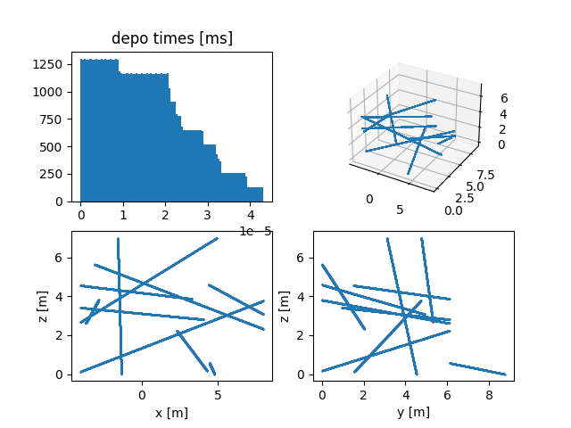
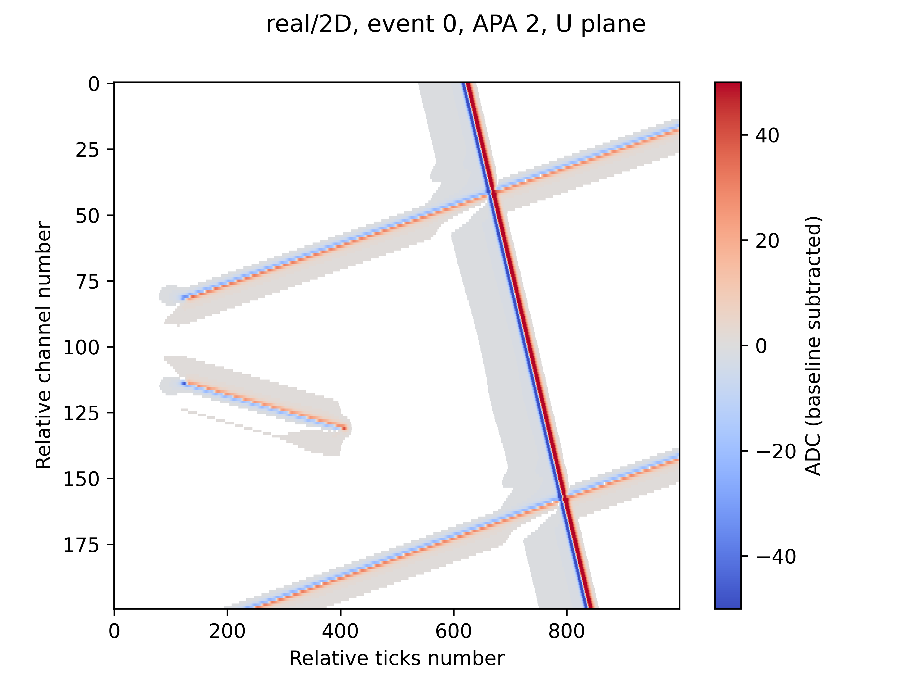
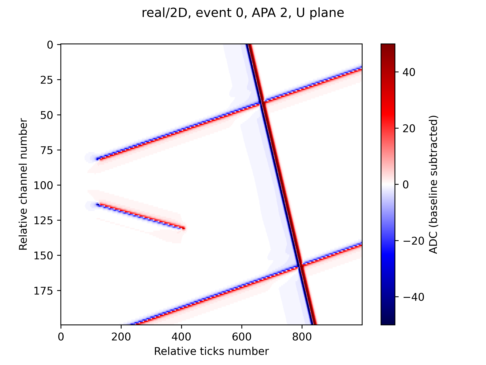
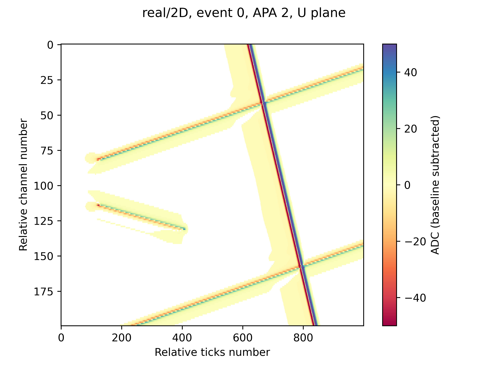
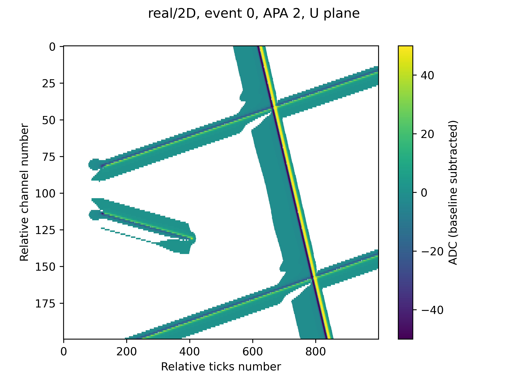

LS4GAN's Toy Zero
Table of Contents
The toyzero package provides first steps toward LS4GAN. See also next-steps.html
1 Goals
After some pre-requirements are met, this package automates the preparation for and running of various Wire-Cell Toolkit jobs in order to produce some initial datasets for initial exploration of the LS4GAN concept.
The final results are in the form raw ADC (Z-axis) waveform arrays in per-channel rows (Y-axis) of time-sampled columns (X-axis). Each array spans one of three wire planes from one of six anode plane assemblies (APA) of the ProtoDUNE-SP detector.
There are two domains named real and fake (both simulated in toyzero). The real domain uses the full, best known 2D response model. The fake domain uses an intentionally "more wrong" quasi-1D model which is derived from the 2D model by zeroing all responses except those covering the central wire of interest. (Note that this quasi-1D model is not the same of the "yet more wronger" 1D model as q1D includes the variation within the central wire region.)
For this initial development we accept a number of simplifying "cheats" which we will rectify as we gain experience and develop the next phase. They are at least the following:
- Use of simulation for both "real" and "fake". Eventually, "real" will be detector data and "fake" will from our best available simulation (currently 2D Wire Cell). We may use paired data for evaluating the technique in this stage but can not rely on it going forward.
- Our initial data tier is that of ADC waveforms and those from only ionization electrons from ideal tracks and in particular excluding noise effects. We eventually will use realistic track simulation (Geant4) and will include noise. When adding noise we will switch to a data tier of reconstructed signal waveforms. To produce them we will include noise models in the simulation and apply noise filtering to both the fake simulation and the real detector data just prior to applying signal processing. We may stop there or go one step further and apply Wire-Cell 3D tomographic imaging to form our data tier. Each step brings "real" and "fake" closer and thus allows LS4GAN to expend its deep neural nodes to find ever more subtle differences.
2 Prepare
This package requires a few user environment settings to support use of Wire-Cell Toolkit and various Python packages. We will assume direnv is used to manage the environment. To use another environment management system, translate the contents of the example dot.envrc.
2.1 Environment
A one time setup of direnv:
$ cd toyzero $ cp dot.envrc .envrc $ emacs .envrc # edit to taste $ direnv allow
2.2 Check Wire-Cell Toolkit
The Wire-Cell Toolkit program wire-cell and its libraries are
required. See https://wirecell.bnl.gov/ for installation information.
Check if WCT is available with these commands:
$ wire-cell --help $ wcsonnet wirecell.jsonnet $ echo $WIRECELL_PATH
The WIRECELL_PATH should include at least the cfg/ directory provided
by WCT. This toyzero package provides additional configuration in
./cfg which will found automatically.
2.3 Python
The stand-alone wire-cell-python package, the snakemake program and
various other Python 3 packages are required.
$ cd toyzero $ pip install -r requirements.txt
Some checks:
$ wirecell-<TAB> $ wirecell-util --help $ snakemake --help
See also section 8 for info on providing a developer version of
wire-cell-python code.
3 Usage
Exercising toyzero will automatically download various files from Wire-Cell GitHub and run various programs. In principle, the user need run only:
$ snakemake -jall all
This can take ten minutes or so depending on how fast your CPU is. To see what is produced:
$ tree data plots
To generate the minimum needed for the "images" data tier (see below) you can do:
$ snakemake -jall just_images
By default, the above does not retain intermediate data files from the "depos", "wires", "resp" and "frames" data tier files (see below for descriptions), only keeping "images". To keep the intermediates you may run as:
$ snakemake -jall just_images --notemp
A one "event" run produce about 2MB of "images" and 360 MB if intermediates are kept.
More information on the use of snakemake in toyzero is below and in
sections 6 and 7.
4 Details
Looking into the Snakefile one will see the all target aggregates a
number of all_* sub-targets. You may run each ordered, piece-wise
manner:
$ snakemake -jall all_resp $ snakemake -jall all_wires $ snakemake -jall all_depos $ snakemake -jall all_frames $ snakemake -jall all_images
Each of these steps are described more in the next subsections.
4.1 resp
The all_resp target downloads 2D WCT "response file" and from it
derives the quasi-1D response file. then various diagnostic plots are
made for each.
Visualization of q1D and 2D responses are generated and shown below. First "fake" q1D and "real" 2D. These show the instantaneous induced current (Z-axis) on a "wire of interest" over the drift path of an electron. One row gives the response for an electron path that begins at the transverse (aka "pitch") location relative to the wire center and as given on the Y-axis. Along that path/row, the Z/color value of each pixel gives the instantaneous current at a moment of time (X-axis).
Note, the actual paths follow some trajectory in space but this information is not important for applying the response (though is very important for calculating the responses). Also note, the current is in a "signed log10" unit with an arbitrary scaling in order to see both fine and gross features.
- Fake/q1D field response for ProtoDUNE-SP
- Real/2D field response for ProtoDUNE-SP
4.2 wires
The all_wires target downloads WCT "wires file" and makes a multipage
PDF file with diagnostic plots at plots/wires-diagnostic.pdf.
Most of these pages may show content that is too esoteric for most users and they exhaustively cover all six protodune APAs. However, the pages showing wire segments may be instructive. For the most part, they can be ignored as "wires files" are typically well tested prior to making them available.
4.3 depos
The all_depos target generates sets of ionization point depositions
for input to the WCT simulation. It produces a file:
data/depos/depos.npz
The file is in Numpy format with three types of arrays named like:
depo_data_<N> depo_info_<N> track_info_<N>
We will ignore the info arrays here.
The <N> counts the set of depos which are generated together (eg, an
"event"). The data arrays are 2D of shape (n, 7) where n is the
number of depositions over all tracks in the "event" and is
O(100k-1M). Each depo is a 7-tuple with elements:
- time
- number of electrons
- X position
- Y position
- Z position
- longitudinal extent (zero here)
- transverse extent (zero here)
A simple summary diagnostic plot for the first "event" is generated showing distribution of depo times and the depo locations.

The track_info_<N> arrays are numpy structured arrays with these
"columns":
- pmin
- 3-vector holding track start point in Cartesian coordinates (mm)
- pmax
- 3-vector holding track end point in Cartesian coordinates (mm)
- tmin
- time at start point (ns)
- tmax
- time at end point (ns)
- step
- distance between steps along track (mm)
- eper
- number of ionization electrons at each step
Each of these columns have one row per "track" (line source) in the
"event" number <N>. By default their length is 10.
4.4 frames
The all_frames target generates "frame" data from depos by running the
Wire-Cell simulation. The "frame" file format is described elsewhere.
For here, we treat it as a temporary.
The simulation is internally structured as a DAG as shown:

4.5 images
The all_images target processes each "frame" data to produce one 2D
image for each of three wire planes of each of six anode plane
assemblies. The file name and name of the single array in the file
match. For example:
❯ wirecell-util npzls data/images/real/protodune-orig-0-1-W.npz protodune-orig-0-1-W (960, 6000)
These image arrays have shape (nchan, ntick). That is each row is the
waveform from one channel and has ntick=6000 samples (3ms). When
visualized with matplotlib's imshow() you will see channels as Y-axis,
tics as X-axis.
This "W" file holds one array of 960 channels and 6000 sample time "ticks" and is from index=0 from the "real" data, APA ID 1 and plane "W" (collection plane aka plane 2 counting from 0). "U" and "V" are induction planes and each will have 800 channels and the contemporaneous 6000 ticks.
5 Plotting
Diagnostic plots for each APA of the first event are made in PDF, PNG and SVG with different color maps to explore how best to display the information. These image pose problems as they are relatively high resolution and high dynamic range but are also sparse. As such we must take care that some visualization will produce very misleading artifacts.
5.1 Image formats
- png
- At
matplotlibdefault DPI expect loss of visual data due to the resolution being low and potentially due to low values falling into the "center" color of the color map. Increasing DPI can help at the cost of larger files. Exploring different color maps follows. - Likely best format to use for accuracy. However beware of antialiasing that many PDF viewers apply to make images and text look "prettier". It can obscure features and add artifacts.
- svg
- Much of the benefits of PDF but can be inlined in HTML.
As an example of DPI problems, compare the two images below. The
first is a high-DPI PNG rendering (by NETPBM) from the original PDF
made by matplotlib and the second is a PNG directly from matplotlib at
its default DPI.
to the same data as PNG at default DPI from matplotlib:
If you need more zoom from your evince PDF viewer try
❯ gsettings set org.gnome.Evince page-cache-size 2014
5.2 Color maps
Selecting a good color map can have a big impact. Some guidance:
- For bipolar data of large dynamic range consider using "seismic" and
symmetric ranges (
vmin/vmax). - For bipolar data with low dynamic range, select a symmetric color map such as "coolwarm" and use a masked array to remove the 0 value.
- Avoid "rainbow" color maps with a large central region of a nearly common color.
The wire-cell-python package provides a command to easily visualize a
2D Numpy image array in a file with many plotting parameters exposed
as command line options:
❯ wirecell-util npz-to-img --help
Usage: wirecell-util npz-to-img [OPTIONS] NPZFILE
Make an image from an array in an numpy file.
Options:
-o, --output TEXT Output image file
-a, --array TEXT Array to plot
-c, --cmap TEXT Color map
-b, --baseline TEXT Apply median baseline subtraction or if number,
subtract directly
-m, --mask TEXT Value or range to mask, range is lower-edge inclusive
--vmin TEXT Minimum value (z/color axis)
--vmax TEXT Maximum value (z/color axis)
--dpi TEXT The dots-per-inch resolution
-z, --zoom TEXT A zoom range as 'rmin:rmax,cmin:cmax'
--help Show this message and exit.
❯ wirecell-util npz-to-img --cmap Spectral \
--zoom 300:500,0:1000 --mask 0 --vmin -50 --vmax 50 \
--dpi 600 --baseline=median \
-o junk.png data/images/real/protodune-orig-0-2-U.npz
A few color map examples with command like tha bove. Note, 0 value is masked to white regardless of color map.
- "coolwarm" (real)

- "seismic" (real)

- "Spectral" (real)

- "viridis" (real)

5.3 Real vs Fake
We select one event region (U plane) to show "real" 2D vs "fake" q1D, both as SVG. In particular, not how there is "long range induction" effects in 2D which are lacking in q1D.
- Real:
- Fake:
6 Configuration
By default, toyzero operates as a generator. That is, every time a
particular version is run it should always produce essentially an
identical result.
Some high-level parameters may be changed to produce different results. These can be controlled by a configuration file. For example the default configuration is held in:
--- # DO NOT EDIT, make a copy, edit that. # This is the default toyzero config file. # Use like: # snakemake --configfile mycfg.yaml -jall all outdir: "." datadir: "data" plotdir: "plots" seed: "1,2,3,4" ntracks: 10 nevents: 10 # how noisy wire-cell should be. "debug" is more, "error" is less wcloglvl: info
To customize,
$ cp toyzero.yaml mycfg.yaml $ emacs mycfg.yaml $ snakemake -jall --configfile mycfg.yaml all
Files carry identical names between the different variant runs. To
avoid collision be sure to set datadir and plotdir to locations not
yet used.
You may also customize specific parameters from the command line:
$ snakemake -jall --config outdir=junk ntracks=10 all_depos $ eom junk/plots/depos-diagnostic.png
A --config wins over an entry in a --configfile. Note, a single
--config flag should be used to indicate all parameter overrides.
Adding another --config will negate all prior.
7 Snakemake
As already introduced, this "toyzero" package is organized around a
snakemake Snakefile which provides automated running of a
directed, acyclic graph (DAG). A node of the DAG is a process and
directional edges are formed through input or output files.
It is instructive to visualize the overall DAG and snakemake provides
this by running:
snakemake --dag all just_images > toyzero-all-dag.dot dot -Tsvg -o toyzero-all-dag.svg toyzero-all-dag.dot dot -Tpdf -o toyzero-all-dag.pdf toyzero-all-dag.dot
Below is the result as SVG or download the toyzero-all-dag.pdf to zoom around.
The "real" documentation on toyzero is the Snakefile as it describes
exactly what is run. In principle, with the Snakefile one can always
reproduce its results. In practice changes in the wire-cell and
wirecell-* programs, or external data can lead to unexpected changes.
8 Hacking
Much of the toyzero package relies on the wire-cell-python package.
You can develop that code locally (instead of push to GitHub +
reinstall). We can leverage the direnv environment for toyzero to do
so like:
$ git clone git@github.com:wirecell/wire-cell-python.git $ cd wire-cell-python/ $ pip install -U -e .
You can now hack on wire-cell-python and your changes are immediately made available. If the changes are generally useful, please consider making a PR!